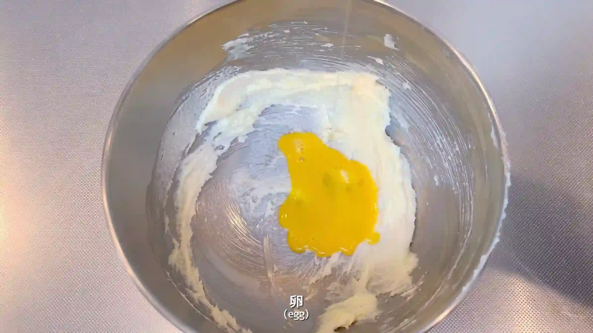
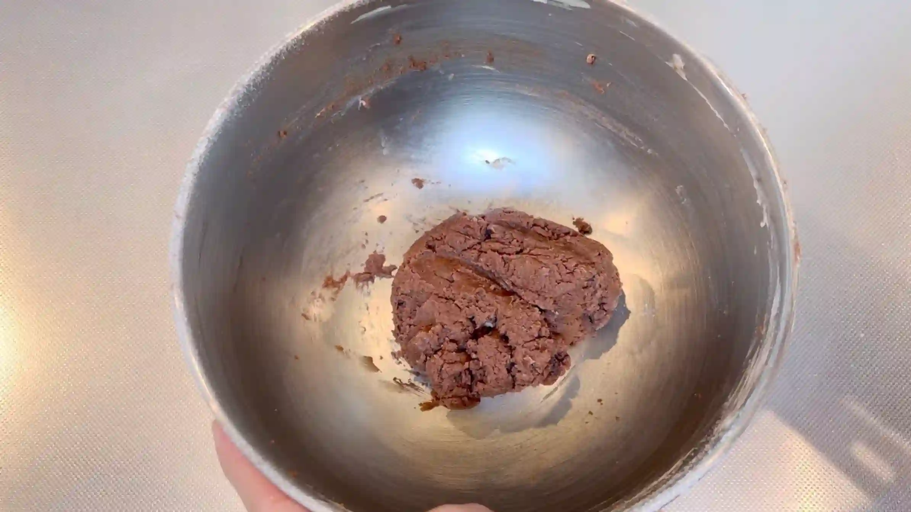
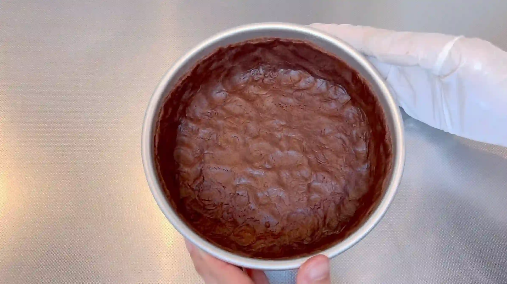
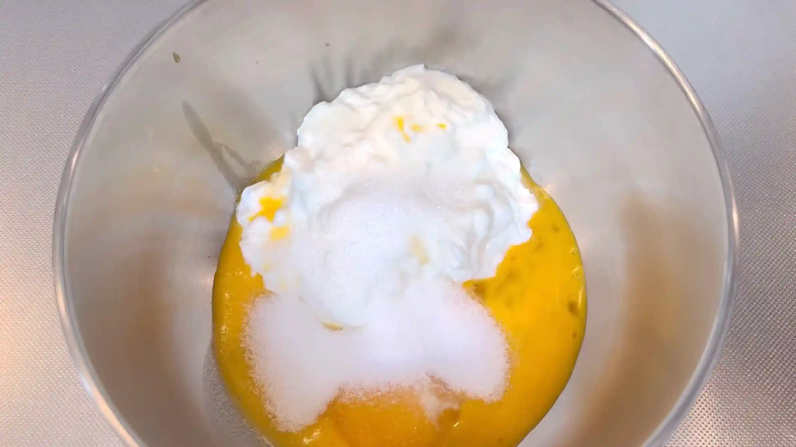
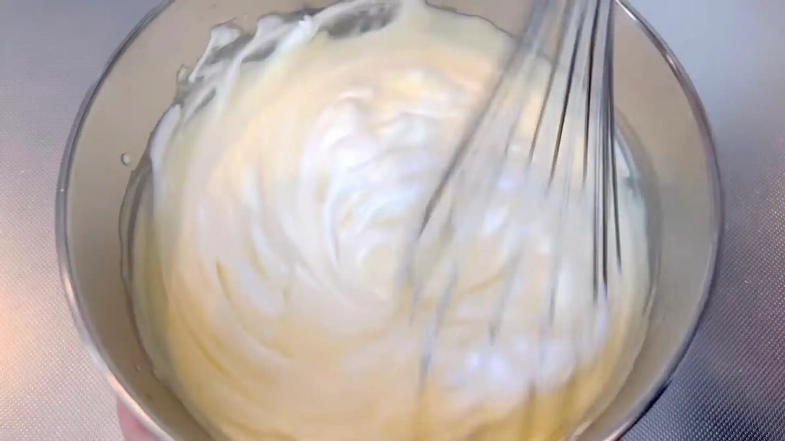
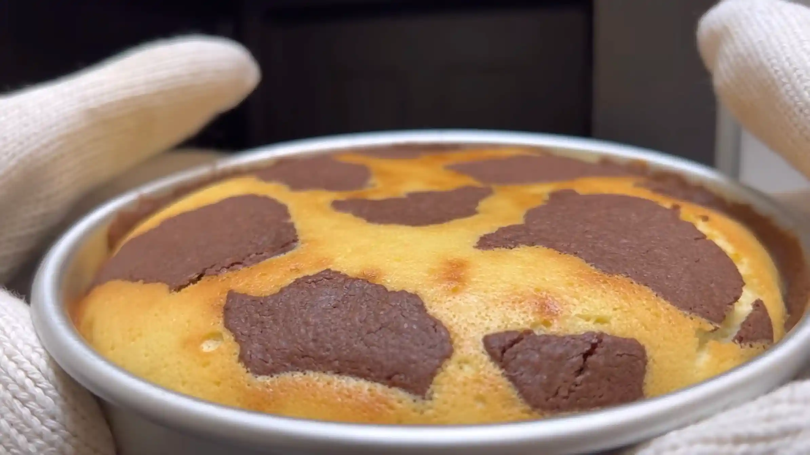
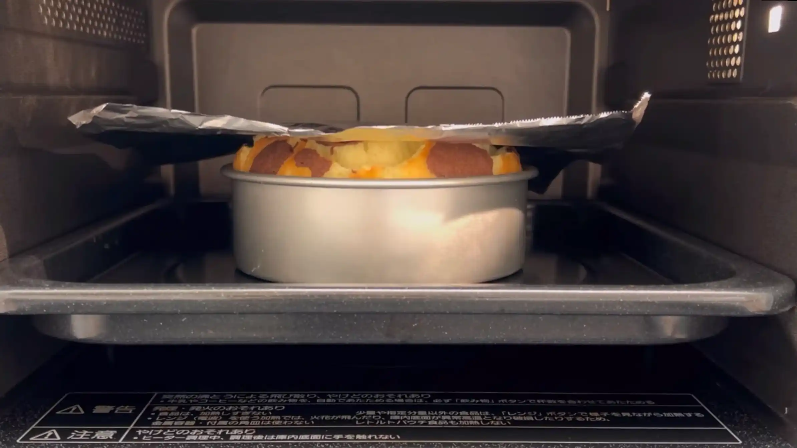
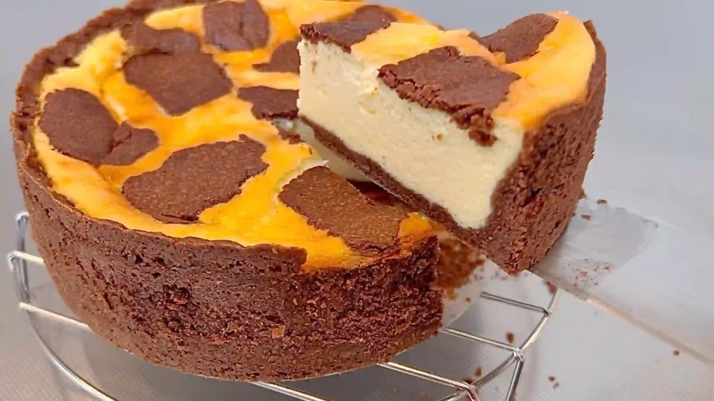

材料
※粉量を変えると自動計算されます
ビスケット生地
フィリング
メレンゲ
型
作り方
水切りヨーグルト
STEP 1
水切りヨーグルトを作る
コーヒードリッパーにヨーグルト400gを入れ、冷蔵庫で冷やしながら水気を切ります。これで約190gの水切りヨーグルトができます。
コーヒードリッパーにヨーグルト400gを入れ、冷蔵庫で冷やしながら水気を切ります。これで約190gの水切りヨーグルトができます。
ケーキ
STEP 1
バターとグラニュー糖を混ぜる
バターをなめらかにし、グラニュー糖を加えてよく混ぜ合わせます。
バターをなめらかにし、グラニュー糖を加えてよく混ぜ合わせます。
STEP 2
卵を加えて混ぜる
卵を加え、バターとグラニュー糖が均一になるまで混ぜ合わせます。
卵を加え、バターとグラニュー糖が均一になるまで混ぜ合わせます。

STEP 3
粉類を加えて混ぜる
薄力粉、ココア、ベーキングパウダーを加え、粉っぽさがなくなるまで混ぜ合わせます。混ぜすぎると生地が硬くなりやすいため、全体がまとまってきたら、次の工程へ進みます。
薄力粉、ココア、ベーキングパウダーを加え、粉っぽさがなくなるまで混ぜ合わせます。混ぜすぎると生地が硬くなりやすいため、全体がまとまってきたら、次の工程へ進みます。

STEP 4
生地を土台用と飾り用に分ける
生地の5/6を土台用に、1/6を飾り用に分けます。飾り用の生地は、平らに伸ばしてラップで包み、冷やしておきます。土台の生地は次の工程で使います。
生地の5/6を土台用に、1/6を飾り用に分けます。飾り用の生地は、平らに伸ばしてラップで包み、冷やしておきます。土台の生地は次の工程で使います。

STEP 5
ケーキ型に生地の土台を敷く
型の内側にバターを薄く塗り、焼き上がったケーキを型から外しやすくしておきます。土台の生地を型の底と側面に薄く均一に敷き詰めます。
型の内側にバターを薄く塗り、焼き上がったケーキを型から外しやすくしておきます。土台の生地を型の底と側面に薄く均一に敷き詰めます。

STEP 6
オーブン200℃で10分焼く
生地の底にフォークで穴をあけてから空焼きします。穴をあけておくことで、焼いている間に生地が大きく膨らむのを抑えます。
生地の底にフォークで穴をあけてから空焼きします。穴をあけておくことで、焼いている間に生地が大きく膨らむのを抑えます。
STEP 7
メレンゲを作る
卵白にグラニュー糖を加え、角がしっかり立つまで泡立ててメレンゲを作ります。メレンゲは後の工程で使うため、このままおいておきます。
卵白にグラニュー糖を加え、角がしっかり立つまで泡立ててメレンゲを作ります。メレンゲは後の工程で使うため、このままおいておきます。
STEP 8
フィリングを作る
メレンゲとは別のボウルに、水切りヨーグルト、卵黄、全卵、グラニュー糖を入れ、生地がなめらかになるまで混ぜ合わせます。水切りヨーグルトの固さが残らないよう、全体を均一に混ぜます。
メレンゲとは別のボウルに、水切りヨーグルト、卵黄、全卵、グラニュー糖を入れ、生地がなめらかになるまで混ぜ合わせます。水切りヨーグルトの固さが残らないよう、全体を均一に混ぜます。

STEP 9
牛乳、片栗粉、バニラエッセンスを加えて混ぜる
さらに牛乳、片栗粉、バニラエッセンスを加えて混ぜ合わせます。海外のレシピではバニラプリン粉を使うことが多い部分ですが、今回は片栗粉を使ってフィリングを固め、プリンのようになめらかな食感に仕上げます。
さらに牛乳、片栗粉、バニラエッセンスを加えて混ぜ合わせます。海外のレシピではバニラプリン粉を使うことが多い部分ですが、今回は片栗粉を使ってフィリングを固め、プリンのようになめらかな食感に仕上げます。
STEP 10
溶かしバター、蜂蜜を加えて混ぜる
さらに溶かしバターと蜂蜜を加え、全体が均一になるまで混ぜ合わせます。バターのコクと蜂蜜の甘みが加わり、濃厚な味わいに仕上がります。
さらに溶かしバターと蜂蜜を加え、全体が均一になるまで混ぜ合わせます。バターのコクと蜂蜜の甘みが加わり、濃厚な味わいに仕上がります。
STEP 11
メレンゲを二回に分けて混ぜる
メレンゲを二回に分けて加え、泡をつぶしすぎないように混ぜ合わせます。全体が均一になれば、混ぜ終わりです。
メレンゲを二回に分けて加え、泡をつぶしすぎないように混ぜ合わせます。全体が均一になれば、混ぜ終わりです。

STEP 12
フィリングを型に流し入れ、生地で飾る
空焼きした生地にフィリングを流し入れ、冷やしておいた飾り用の生地をちぎって、表面にのせていきます。
空焼きした生地にフィリングを流し入れ、冷やしておいた飾り用の生地をちぎって、表面にのせていきます。

STEP 13
200℃で20分、さらにアルミホイルを被せ170℃で8分焼く
最初は200℃で焼いて生地をしっかり膨らませ、その後はアルミホイルを被せて170℃に下げます。表面が焦げるのを防ぎながら、中までじっくり火を通します。
最初は200℃で焼いて生地をしっかり膨らませ、その後はアルミホイルを被せて170℃に下げます。表面が焦げるのを防ぎながら、中までじっくり火を通します。

STEP 14
生地が膨らんできたら途中で取り出し、10分おく
一度オーブンから取り出し、10分ほど室温において生地を落ち着かせます。生地が膨らみすぎて表面が割れるのを防ぐための工程です。
一度オーブンから取り出し、10分ほど室温において生地を落ち着かせます。生地が膨らみすぎて表面が割れるのを防ぐための工程です。
STEP 15
170℃で15分焼く
アルミホイルを被せ、再び170℃で焼いて中心までじっくり火を通します。
アルミホイルを被せ、再び170℃で焼いて中心までじっくり火を通します。

STEP 16
ケーキが冷めたら型から出す
焼き上がった直後は生地がやわらかく崩れやすいため、しっかり冷ましてから型から外します。冷めることでフィリングも落ち着き、きれいに切り分けやすくなります。
焼き上がった直後は生地がやわらかく崩れやすいため、しっかり冷ましてから型から外します。冷めることでフィリングも落ち着き、きれいに切り分けやすくなります。

動画でチェック
おいしく作るためのワンポイントコラム
友人に勧められて読んでいた小説『ときどき旅に出るカフェ』に、聞き慣れないお菓子が登場しました。ドイツの伝統的なチーズケーキ『ロシア風ツップフクーヘン』です。
ドイツのお菓子なのに『ロシア風』という不思議な名前。そして、チーズケーキとココアという珍しい組み合わせ。どちらも気になって、再現してみました。おうちで美味しく仕上げるための3つのコツをまとめています。
① 本格派になる水切りヨーグルト
このケーキ、実はクリームチーズではなく水切りヨーグルトを使うのが本場の味に近づく秘訣。今回は冷蔵庫で2時間ほど水切りしました。クリームチーズよりもさっぱりしつつ、スフレのような極上のしっとり軽いコクが生まれます。ココア生地のほろ苦さと合わさることで、食べたことのない絶妙な美味しさになります。
② 型に合わせた分量の計算
お菓子のレシピを見て「うちの型とサイズが違う…」と諦めることってありますよね。今回は参考にさせて頂いたレシピが24cm型、手持ちが15cm型だったので、便利な計算ページを使って分量を0.4倍に変換して作りました。また、本場のレシピにあるプリンの素の代わりに牛乳・片栗粉・バニラエッセンスで代用。おうちにある材料で作れると嬉しいですね。
③ 焼き時間のコツ
生地が膨らんできたら、一度オーブンから出して10分ほど冷まして焼くのがポイント。こうすることで膨らみ過ぎを防ぎ、しっとりした生地に焼き上がります。焦げそうな時は途中でアルミホイルを被せると綺麗な焼き色をキープできますね。焼き時間は型のサイズによって変わります。今回は24cm型のレシピを15cm型用に換算しましたが、分量だけを変えて、焼き時間は計算していませんでした。型が変わると焼き時間も変わるので、焼き色を見ながら調整するのがおすすめです。
焼き上がったらしっかり冷蔵庫で冷やすと、フィリングが落ち着いて、味も引き締まり、きれいに切り分けやすくなります。動画では、飾り用のココア生地が足りなくなったりと、ハプニングが多々ありましたが、多少形が歪になっても、一つ一つの工程を丁寧にこなして作ったお菓子は格別でした！
ドイツのお菓子なのに『ロシア風』という不思議な名前。そして、チーズケーキとココアという珍しい組み合わせ。どちらも気になって、再現してみました。おうちで美味しく仕上げるための3つのコツをまとめています。
① 本格派になる水切りヨーグルト
このケーキ、実はクリームチーズではなく水切りヨーグルトを使うのが本場の味に近づく秘訣。今回は冷蔵庫で2時間ほど水切りしました。クリームチーズよりもさっぱりしつつ、スフレのような極上のしっとり軽いコクが生まれます。ココア生地のほろ苦さと合わさることで、食べたことのない絶妙な美味しさになります。
② 型に合わせた分量の計算
お菓子のレシピを見て「うちの型とサイズが違う…」と諦めることってありますよね。今回は参考にさせて頂いたレシピが24cm型、手持ちが15cm型だったので、便利な計算ページを使って分量を0.4倍に変換して作りました。また、本場のレシピにあるプリンの素の代わりに牛乳・片栗粉・バニラエッセンスで代用。おうちにある材料で作れると嬉しいですね。
③ 焼き時間のコツ
生地が膨らんできたら、一度オーブンから出して10分ほど冷まして焼くのがポイント。こうすることで膨らみ過ぎを防ぎ、しっとりした生地に焼き上がります。焦げそうな時は途中でアルミホイルを被せると綺麗な焼き色をキープできますね。焼き時間は型のサイズによって変わります。今回は24cm型のレシピを15cm型用に換算しましたが、分量だけを変えて、焼き時間は計算していませんでした。型が変わると焼き時間も変わるので、焼き色を見ながら調整するのがおすすめです。
焼き上がったらしっかり冷蔵庫で冷やすと、フィリングが落ち着いて、味も引き締まり、きれいに切り分けやすくなります。動画では、飾り用のココア生地が足りなくなったりと、ハプニングが多々ありましたが、多少形が歪になっても、一つ一つの工程を丁寧にこなして作ったお菓子は格別でした！


小説にも登場するドイツの伝統菓子『ロシア風ツップフクーヘン』をおうちで作ってみました！クリームチーズの代わりに水切りヨーグルトを使い、さっぱりスフレ食感とココア生地が絶妙にマッチ。コラムでは「本格派になる水切りヨーグルト」「型に合わせた分量の計算」「焼き時間のコツ」の3つをご紹介します。